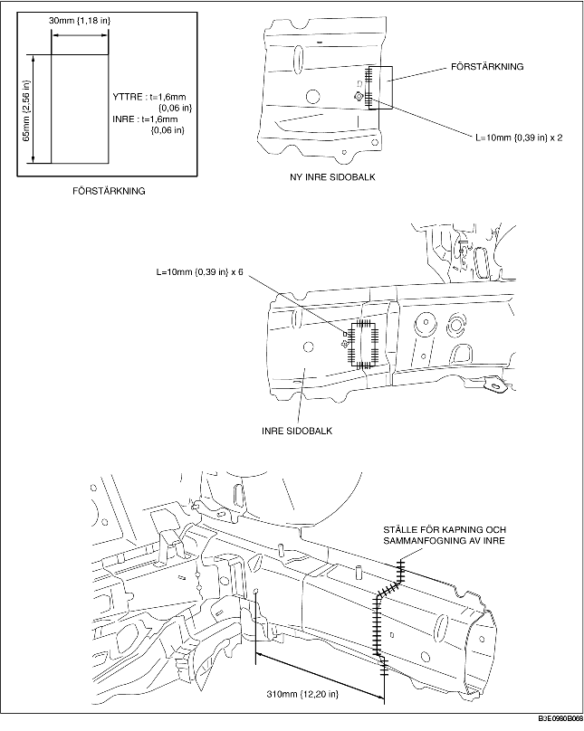
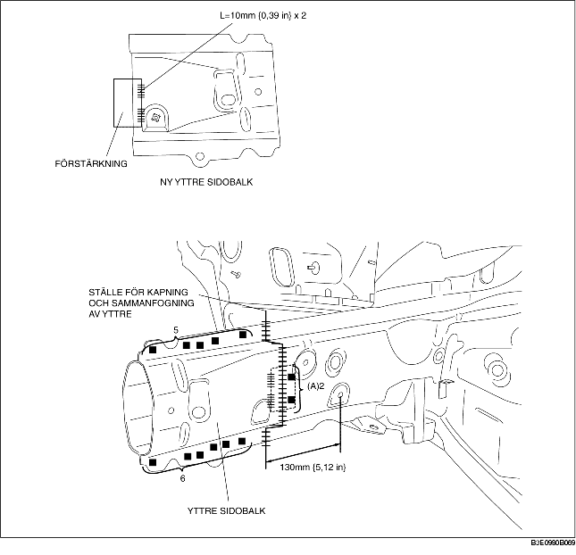

1. Gör en förstärkningspanel med material från den främre sidobalken.
2. För att kapa och sammanfoga nya och befintliga delar, kapa ställena för den nya delen enligt figuren nedan och fasa ställena för sammanfogning av nya och befintliga delar.
3. Vid montering av nya delar, provmontera nya och befintliga delar och mät och justera sedan karossen så att den stämmer enligt ritningen.
4. För att montera den inre delen, provmontera de nya och befintliga delarna, svetsa befintliga delar och förstärkningen, och punktsvetsa sedan de nya och befintliga delarna.
5. Eftersom den yttre delen inte kan svetsas på de befintliga delarna inifrån ramen, borra 2 hål för pluggsvetsning vid de punkter som markeras med (A) på de befintliga delarna. Montera förstärkningen och de befintliga delarna genom att pluggsvetsa utifrån ramen. Punktsvetsa sedan de nya och befintliga delarna.
6. Slipa det område där den inre och den yttre delen punktsvetsas med en vinkelslip för att finbearbeta ytan.

